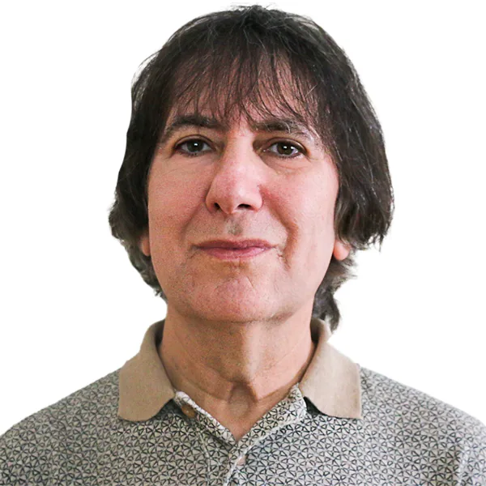
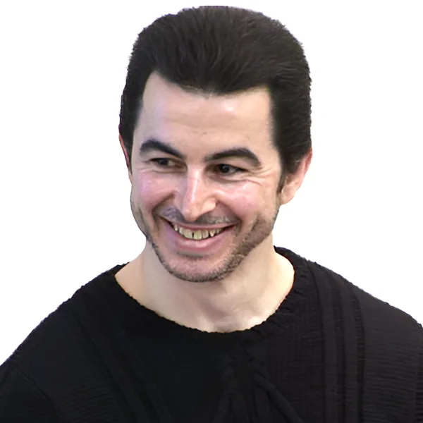

Directory
Informatics
Department Chair

Michael HalperProfessorOntologiesObject-Oriented and Conceptual ModelingPart-Whole ModelingModeling of Non-traditional DataDistinguished Professor
 Julie AncisDistinguished Professorcyberpsychologysocial mediacultureonline hateFadi DeekDistinguished ProfessorArtificial IntelligenceMachine learningAI Philosophy and EthicsBlockchain Technology
Julie AncisDistinguished Professorcyberpsychologysocial mediacultureonline hateFadi DeekDistinguished ProfessorArtificial IntelligenceMachine learningAI Philosophy and EthicsBlockchain TechnologyAssociate Professor

Jakov ChakareskiAssociate ProfessorImmersive ComputingVR/AR Network SystemsPhysics-Aware LearningUAV-IoT 5G Systems Donghee Yvette WohnAssociate ProfessorHuman Computer Interaction (HCI)social mediamedia psychologysustainabilityQuentin JonesAssociate ProfessorSocial ComputingCyber Human SystemsCSCWUbiComp
Donghee Yvette WohnAssociate ProfessorHuman Computer Interaction (HCI)social mediamedia psychologysustainabilityQuentin JonesAssociate ProfessorSocial ComputingCyber Human SystemsCSCWUbiComp Michael LeeAssociate Professorcomputing educationhuman-computer interactionBrook WuAssociate Professortext mininginformation extractionknowledge representationinformation retrieval
Michael LeeAssociate Professorcomputing educationhuman-computer interactionBrook WuAssociate Professortext mininginformation extractionknowledge representationinformation retrievalAssistant Professor
Mark CartwrightAssistant Professormachine listeninghuman-computer interactionMachine learningaudio Salam DaherAssistant Professormathematicsdigital mediaartsModeling and Simulation (Healthcare Simulation)Amy HooverAssistant ProfessorCreative AISooyeon LeeAssistant Professorhuman-computer interactionaccessibilityhuman-AI interactionDesign ResearchNathan MalkinAssistant Professorusable privacy and securityhuman-centered security and privacyAlisha PradhanAssistant ProfessorHuman-computer Interaction (HCI)agingaccessibilityhuman-computer interactionErin TruesdellAssistant Professorgame controllersplaycollaborationtangible interfacesMargarita VinnikovAssistant Professorvirtual realityaugmented realitymixed reality (XR) technologiesXR and Gaze-contingent displays
Salam DaherAssistant Professormathematicsdigital mediaartsModeling and Simulation (Healthcare Simulation)Amy HooverAssistant ProfessorCreative AISooyeon LeeAssistant Professorhuman-computer interactionaccessibilityhuman-AI interactionDesign ResearchNathan MalkinAssistant Professorusable privacy and securityhuman-centered security and privacyAlisha PradhanAssistant ProfessorHuman-computer Interaction (HCI)agingaccessibilityhuman-computer interactionErin TruesdellAssistant Professorgame controllersplaycollaborationtangible interfacesMargarita VinnikovAssistant Professorvirtual realityaugmented realitymixed reality (XR) technologiesXR and Gaze-contingent displays Tomer WeissAssistant Professorcomputer graphicscomputer visionCrowd SimulationChenxi YuanAssistant ProfessorLei ZhangAssistant Professorhuman-computer interactionvirtual realityaugmented reality
Tomer WeissAssistant Professorcomputer graphicscomputer visionCrowd SimulationChenxi YuanAssistant ProfessorLei ZhangAssistant Professorhuman-computer interactionvirtual realityaugmented realitySenior University Lecturer
Mark ChiusanoSenior University LecturerMaura DeekSenior University LecturerRich EganSenior University LecturerArthur HendelaSenior University LecturerDJ KehoeSenior University LecturerLin LinSenior University LecturerEric NersesianSenior University Lecturereducational technologyvirtual realityvideo gamescomputer graphicsMarc SequeiraSenior University LecturerRobert StaticaSenior University LecturerRyan TolboomSenior University LecturerOpen-source software developmentopen educational resourcesdistributed systemsmesh networkingDavid UllmanSenior University LecturerRosemina VohraSenior University LecturerLori Watrous-deVersterreSenior University LecturerKeith WilliamsSenior University LecturerUniversity Lecturer
Jennifer FarleyUniversity LecturerKarl GiannoglouUniversity LecturerThomas LicciardelloUniversity LecturerKeita OhshiroUniversity Lectureraccessibilitydesignhuman-computer interactionComputer ScienceDipesh PatelUniversity LecturerAdam SpryszynskiUniversity LecturerMatt ToegelUniversity LecturerOmar WoodruffUniversity Lecturer1Donghee Yvette WohnAssociate Professor12,278citations52h-index2Julie AncisDistinguished Professor6,770citations33h-index3Quentin JonesAssociate Professor6,425citations35h-index4Jakov ChakareskiAssociate Professor6,172citations41h-index5Fadi DeekDistinguished Professor2,886citations26h-index6Amy HooverAssistant Professor2,206citations22h-index7Alisha PradhanAssistant Professor2,166citations16h-index8Mark CartwrightAssistant Professor2,045citations23h-index9Nathan MalkinAssistant Professor1,790citations19h-index10Brook WuAssociate Professor1,768citations15h-index11Michael LeeAssociate Professor1,704citations21h-index12Sooyeon LeeAssistant Professor1,236citations22h-index13Chenxi YuanAssistant Professor816citations13h-index14Salam DaherAssistant Professor513citations13h-index15Lei ZhangAssistant Professor432citations9h-index16Tomer WeissAssistant Professor389citations11h-index17Margarita VinnikovAssistant Professor350citations9h-index18Keita OhshiroUniversity Lecturer287citations8h-index19Adam SpryszynskiUniversity Lecturer141citations6h-index20Eric NersesianSenior University Lecturer136citations5h-index21Erin TruesdellAssistant Professor44citations4h-index22David UllmanSenior University Lecturer26citations2h-index23Ryan TolboomSenior University Lecturer4citations1h-index—Mark ChiusanoSenior University Lecturer—citations—h-index—Maura DeekSenior University Lecturer—citations—h-index—Rich EganSenior University Lecturer—citations—h-index—Jennifer FarleyUniversity Lecturer—citations—h-index—Karl GiannoglouUniversity Lecturer—citations—h-index—Michael HalperProfessor—citations—h-index—Arthur HendelaSenior University Lecturer—citations—h-index—DJ KehoeSenior University Lecturer—citations—h-index—Thomas LicciardelloUniversity Lecturer—citations—h-index—Lin LinSenior University Lecturer—citations—h-index—Dipesh PatelUniversity Lecturer—citations—h-index—Marc SequeiraSenior University Lecturer—citations—h-index—Robert StaticaSenior University Lecturer—citations—h-index—Matt ToegelUniversity Lecturer—citations—h-index—Rosemina VohraSenior University Lecturer—citations—h-index—Lori Watrous-deVersterreSenior University Lecturer—citations—h-index—Keith WilliamsSenior University Lecturer—citations—h-index—Omar WoodruffUniversity Lecturer—citations—h-index
Donghee Yvette WohnAssociate Professor12,278citations52h-index2Julie AncisDistinguished Professor6,770citations33h-index3Quentin JonesAssociate Professor6,425citations35h-index4Jakov ChakareskiAssociate Professor6,172citations41h-index5Fadi DeekDistinguished Professor2,886citations26h-index6Amy HooverAssistant Professor2,206citations22h-index7Alisha PradhanAssistant Professor2,166citations16h-index8Mark CartwrightAssistant Professor2,045citations23h-index9Nathan MalkinAssistant Professor1,790citations19h-index10Brook WuAssociate Professor1,768citations15h-index11Michael LeeAssociate Professor1,704citations21h-index12Sooyeon LeeAssistant Professor1,236citations22h-index13Chenxi YuanAssistant Professor816citations13h-index14Salam DaherAssistant Professor513citations13h-index15Lei ZhangAssistant Professor432citations9h-index16Tomer WeissAssistant Professor389citations11h-index17Margarita VinnikovAssistant Professor350citations9h-index18Keita OhshiroUniversity Lecturer287citations8h-index19Adam SpryszynskiUniversity Lecturer141citations6h-index20Eric NersesianSenior University Lecturer136citations5h-index21Erin TruesdellAssistant Professor44citations4h-index22David UllmanSenior University Lecturer26citations2h-index23Ryan TolboomSenior University Lecturer4citations1h-index—Mark ChiusanoSenior University Lecturer—citations—h-index—Maura DeekSenior University Lecturer—citations—h-index—Rich EganSenior University Lecturer—citations—h-index—Jennifer FarleyUniversity Lecturer—citations—h-index—Karl GiannoglouUniversity Lecturer—citations—h-index—Michael HalperProfessor—citations—h-index—Arthur HendelaSenior University Lecturer—citations—h-index—DJ KehoeSenior University Lecturer—citations—h-index—Thomas LicciardelloUniversity Lecturer—citations—h-index—Lin LinSenior University Lecturer—citations—h-index—Dipesh PatelUniversity Lecturer—citations—h-index—Marc SequeiraSenior University Lecturer—citations—h-index—Robert StaticaSenior University Lecturer—citations—h-index—Matt ToegelUniversity Lecturer—citations—h-index—Rosemina VohraSenior University Lecturer—citations—h-index—Lori Watrous-deVersterreSenior University Lecturer—citations—h-index—Keith WilliamsSenior University Lecturer—citations—h-index—Omar WoodruffUniversity Lecturer—citations—h-indexJulie AncisDistinguished Professorcyberpsychologysocial mediacultureonline hateMark CartwrightAssistant Professormachine listeninghuman-computer interactionMachine learningaudioJakov ChakareskiAssociate ProfessorImmersive ComputingVR/AR Network SystemsPhysics-Aware LearningUAV-IoT 5G SystemsMark ChiusanoSenior University LecturerSalam DaherAssistant Professormathematicsdigital mediaartsModeling and Simulation (Healthcare Simulation)Fadi DeekDistinguished ProfessorArtificial IntelligenceMachine learningAI Philosophy and EthicsBlockchain TechnologyMaura DeekSenior University LecturerDonghee Yvette WohnAssociate ProfessorHuman Computer Interaction (HCI)social mediamedia psychologysustainabilityRich EganSenior University LecturerJennifer FarleyUniversity LecturerKarl GiannoglouUniversity LecturerMichael HalperProfessorOntologiesObject-Oriented and Conceptual ModelingPart-Whole ModelingModeling of Non-traditional DataArthur HendelaSenior University LecturerAmy HooverAssistant ProfessorCreative AIQuentin JonesAssociate ProfessorSocial ComputingCyber Human SystemsCSCWUbiCompDJ KehoeSenior University LecturerMichael LeeAssociate Professorcomputing educationhuman-computer interactionSooyeon LeeAssistant Professorhuman-computer interactionaccessibilityhuman-AI interactionDesign ResearchThomas LicciardelloUniversity LecturerLin LinSenior University LecturerNathan MalkinAssistant Professorusable privacy and securityhuman-centered security and privacyEric NersesianSenior University Lecturereducational technologyvirtual realityvideo gamescomputer graphicsKeita OhshiroUniversity Lectureraccessibilitydesignhuman-computer interactionComputer ScienceDipesh PatelUniversity LecturerAlisha PradhanAssistant ProfessorHuman-computer Interaction (HCI)agingaccessibilityhuman-computer interactionMarc SequeiraSenior University LecturerAdam SpryszynskiUniversity LecturerRobert StaticaSenior University LecturerMatt ToegelUniversity LecturerRyan TolboomSenior University LecturerOpen-source software developmentopen educational resourcesdistributed systemsmesh networkingErin TruesdellAssistant Professorgame controllersplaycollaborationtangible interfacesDavid UllmanSenior University LecturerMargarita VinnikovAssistant Professorvirtual realityaugmented realitymixed reality (XR) technologiesXR and Gaze-contingent displaysRosemina VohraSenior University LecturerLori Watrous-deVersterreSenior University LecturerTomer WeissAssistant Professorcomputer graphicscomputer visionCrowd SimulationKeith WilliamsSenior University LecturerOmar WoodruffUniversity LecturerBrook WuAssociate Professortext mininginformation extractionknowledge representationinformation retrievalChenxi YuanAssistant ProfessorLei ZhangAssistant Professorhuman-computer interactionvirtual realityaugmented realityFaculty whose annual citations grew over their five most recent complete years (the current year is excluded — it is still accruing). Citations lag research by 2–5 years, and faculty with large established citation bases naturally show flatter recent growth — this highlights recent momentum, not overall impact or research quality.
Chenxi YuanAssistant Professor2021–2025+98%/yrmomentum295recent/yrLei ZhangAssistant Professor2021–2025+69%/yrmomentum136recent/yrSooyeon LeeAssistant Professor2021–2025+69%/yrmomentum355recent/yrKeita OhshiroUniversity Lecturer2021–2025+52%/yrmomentum86recent/yrTomer WeissAssistant Professor2021–2025+25%/yrmomentum80recent/yrFadi DeekDistinguished Professor2021–2025+19%/yrmomentum161recent/yrAlisha PradhanAssistant Professor2021–2025+18%/yrmomentum430recent/yrAmy HooverAssistant Professor2021–2025+16%/yrmomentum339recent/yrNathan MalkinAssistant Professor2021–2025+12%/yrmomentum326recent/yrDonghee Yvette WohnAssociate Professor2021–2025+11%/yrmomentum1631recent/yrSalam DaherAssistant Professor2021–2025+9%/yrmomentum79recent/yrMark CartwrightAssistant Professor2021–2025+7%/yrmomentum308recent/yrCitation counts support, they don’t replace, judgment.
Professors
Julie AncisDistinguished Professorcyberpsychologysocial mediacultureonline hateFadi DeekDistinguished ProfessorArtificial IntelligenceMachine learningAI Philosophy and EthicsBlockchain TechnologyAssociate Professors
Jakov ChakareskiAssociate ProfessorImmersive ComputingVR/AR Network SystemsPhysics-Aware LearningUAV-IoT 5G SystemsDonghee Yvette WohnAssociate ProfessorHuman Computer Interaction (HCI)social mediamedia psychologysustainabilityQuentin JonesAssociate ProfessorSocial ComputingCyber Human SystemsCSCWUbiCompMichael LeeAssociate Professorcomputing educationhuman-computer interactionBrook WuAssociate Professortext mininginformation extractionknowledge representationinformation retrievalAssistant Professors
Mark CartwrightAssistant Professormachine listeninghuman-computer interactionMachine learningaudioSalam DaherAssistant Professormathematicsdigital mediaartsModeling and Simulation (Healthcare Simulation)Amy HooverAssistant ProfessorCreative AISooyeon LeeAssistant Professorhuman-computer interactionaccessibilityhuman-AI interactionDesign ResearchNathan MalkinAssistant Professorusable privacy and securityhuman-centered security and privacyAlisha PradhanAssistant ProfessorHuman-computer Interaction (HCI)agingaccessibilityhuman-computer interactionErin TruesdellAssistant Professorgame controllersplaycollaborationtangible interfacesMargarita VinnikovAssistant Professorvirtual realityaugmented realitymixed reality (XR) technologiesXR and Gaze-contingent displaysTomer WeissAssistant Professorcomputer graphicscomputer visionCrowd SimulationChenxi YuanAssistant ProfessorLei ZhangAssistant Professorhuman-computer interactionvirtual realityaugmented realitySenior Lecturers
Mark ChiusanoSenior University LecturerMaura DeekSenior University LecturerRich EganSenior University LecturerArthur HendelaSenior University LecturerDJ KehoeSenior University LecturerLin LinSenior University LecturerEric NersesianSenior University Lecturereducational technologyvirtual realityvideo gamescomputer graphicsMarc SequeiraSenior University LecturerRobert StaticaSenior University LecturerRyan TolboomSenior University LecturerOpen-source software developmentopen educational resourcesdistributed systemsmesh networkingDavid UllmanSenior University LecturerRosemina VohraSenior University LecturerLori Watrous-deVersterreSenior University LecturerKeith WilliamsSenior University LecturerUniversity Lecturers
Jennifer FarleyUniversity LecturerKarl GiannoglouUniversity LecturerThomas LicciardelloUniversity LecturerKeita OhshiroUniversity Lectureraccessibilitydesignhuman-computer interactionComputer ScienceDipesh PatelUniversity LecturerAdam SpryszynskiUniversity LecturerMatt ToegelUniversity LecturerOmar WoodruffUniversity LecturerNo faculty match “”.